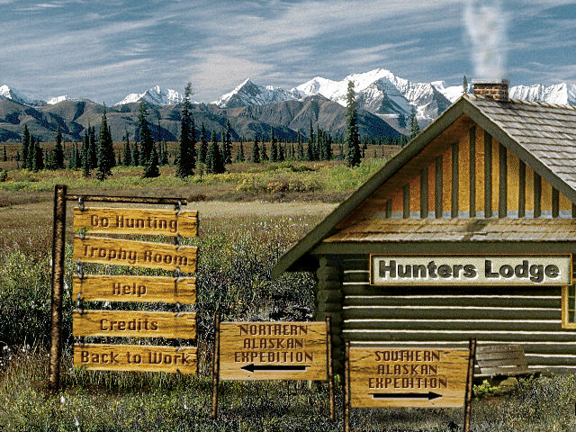
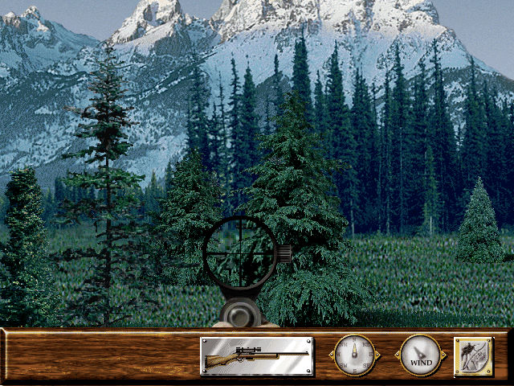

名稱：獵手1／洛磯山脈獎盃獵人1：互動式大型獵物狩獵 (Rocky Mountain Trophy Hunter: Interactive Big Game Hunting，英文版)
簡介：Sunstorm 1998年出品的第一人稱射擊獵人遊戲，由WizardWorks代理發行。2000年再
推出「阿拉斯加探險（Alaskan Expedition）」資料片 [待補]。


保護：無
備註：主程式儘量安裝在內定目錄，否則資料片安裝時可能誤判原始主程式未安裝。
備註：XP以上系統安裝資料片時，若出現要求安裝原始主程式的錯誤，可將光碟的內容全數
拷貝到硬碟，再執行硬碟裡的SETUP.EXE，即可安裝。又，硬碟剩餘空間不可太多，否
則資料片安裝時會誤判，誤為空間不足不給安裝。建議是在Win9x環境上安裝。
備註：VirtualBox需搭配ddraw。